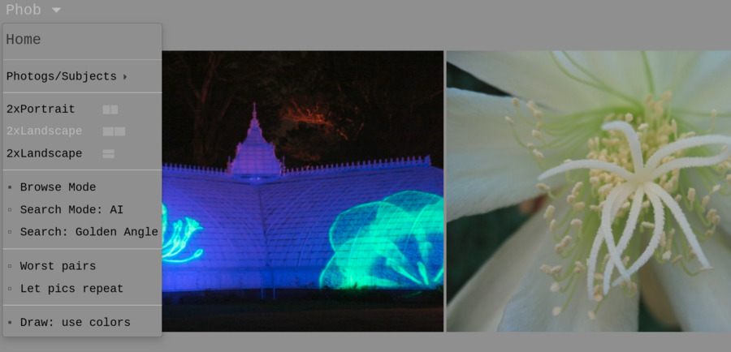
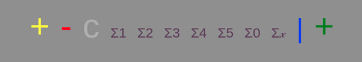
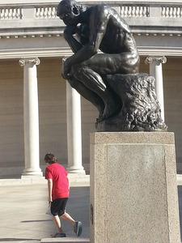
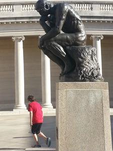

"Mr. M. Frydman, an engineer, remarked on the subject of Grace,
'A salt doll diving into the sea will not be protected
by a waterproof coat.'
It was a very happy simile and was applauded as such. Maharshi added,
'The body is the waterproof coat.'"
-- Talks With Sri Ramana Maharshi
Identity is the artificial flower on the compost
heap of time. -- Louis Menand, "Listening to Bourbon"
Phobrain uses a new type of recorded brain, based on training neural nets on interesting photo pairs, navigating it in response to your mouse movement. Mapping your action to this landscape in a unique way puts Phobrain in the moment with you, an initial step toward it feeling alive. The base algorithm is a weighted-random auction process.
What are you, at your core?
Awareness is a key part, one that we share
with many animals, and can feel when looking into a dog's eyes.
I am working on creating that feeling with photo pairing, so that you can
look into the eye of the computer screen and feel
something responding to you.
How does it work?
You look at the photos, and see what the pair has in common, if it
seems meaningful somehow.
Then you draw a line of dots on them, and this is used to
select the next pair.
I find that if I think about my drawing,
like tracing things or moving to music, I see more in the next pair.
Often I can feel like something has answered me, even though I know
there is no such understanding.
Beyond comparing and contrasting, Phobrain is designed
to explore how we identify living beings and classify
them, as a step toward being seen as fully alive.
How is the line of dots used?
The drawn line is used like cookies for choosing
online ads — replacing the personal data gathered for commerce
with a 'motion vector' inspired by dance and molecular
simulation. For example, using the
distance between the first and last dots
divided by the
length of the line,
along with similar simple measurements, all rolled into an arbitrary
formula that I have tuned and which, since it's causal
(though statistical), one might learn unconsciously,
like skipping a stone on a pond.
The 'pond' of Phobrain is a
multidimensional mental landscape I have created by training
neural nets on my favorite pair choices.
Clicking in the grey area just above the photos
chooses a pair of unseen photos at random.

Screens.
The screens show either portrait-oriented
or landscape-oriented pairs. The landscape pairs can
be either side-by-side or stacked. Side-by-side landscapes
are recommended if a wide screen is available.
Search Modes.
Several options for choosing the next pair appear
below the photos, some depending on whether AI or Golden Angle is chosen:

+
gives color similarity (using one of 10 algorithms).
-
gives the worst choices according to neural nets.
c
chooses curated pairs.
The purple options,
Σ1 Σ1 Σ3
Σ4 Σ5 ΣΣ
Σ𝓍 ,
apply various combinations of neural networks.
The grey numbered options,
2 3 8 27 32K,
apply the
Golden Angle
in color histogram-based spaces of the numbered dimensions.
|
chooses a pair completely at random.
+
chooses a match based on intersected descriptions using keywords,
ranked by neural networks.
In Search Mode, clicking on a photo results in a
match to its neighbor (rather than replacing the pair),
depending on whether you click on a corner
or the center (center uses the top neural nets, corners other
nn combos).
Clicking in the grey area next to the options, to the left of
the yellow
+
or to the right of the green
+,
will cause any keywords shared by the photos,
or color-matching algorithm used to choose them, to appear to the right of
the options, for as long as the mouse button is held down.
Clicking in the grey area next to a photo toggles it with the one
that was there before.
Clicking below the photos, in the grey area just above the options,
toggles both photos with the non-showing pair.
Holding this area down for a second restores the most recent pair.
Don't worry if you don't see any similarities or meaning at first —
it's not perfect — but if you keep at it, you will start
to see themes that last over a few pictures, then more
will start making sense — it's like
learning a language you find you already know.
To change the subject in Draw mode, you can click
above the photos to get random photos,
or draw back and forth between photos 3 or 4 times to change the subject,
or 5 or more times to try for people or at least something alive.
Example analysis
Looking at the photo on the left above, we might describe it with
the words "woman hand phone face blue". If I click on
+
for it.
I expect to see another picture with at least one of these features, but
will blue-ness jump out for me on the next photo?
As you go from picture to picture, it is a little like a crossword
puzzle, matching up words instead of letters.
Now consider the photo on the right above: it is outdoors
not indoors, in public not in private, the background
has classic geometry, the real person
in it is a boy and not a woman, and the color that jumps
out is red instead of blue. On the other hand, there are
two males in each picture, and there are representations
of people (picture on phone, and statue). Perhaps the
most interesting similarity between the two photos is
that there is an interaction between a person (or people) and
a representation of a person in each.
This site can help build up your analytical
abilities, although it does not do such a complicated
analysis itself, and would be unlikely (we hope) to join
these two pictures when the
+
option is used.
Like when learning a language, you can enjoy the view
and watch for patterns to emerge.
Sessions: Each browser creates its own session, which should
keep you from seeing any repeats of pictures within a given View.
The dog's eyes: My goal is to make the site smart enough so that
it seems alive, like the feeling you get when looking into a dog's eyes.
The fading image when you enter the slideshow is a gesture toward that goal.
Can you make it browsable?
I don't plan to add any kind of browsability like other excellent sites have.
Can we upload pictures?
I plan to add the ability to upload photos to the site.
Will it be available in vape pen factor? Can pets view it
safely?
Product plans are extensive but tightly-held via obscure diction
as phobrain on reddit. This is all-new technology folks, so only
exposure to guinea pigs and the 1% is advised at this time.
Theory: (This describes the original, single-photo version.)
A picture can tell a story that stands on its own and burns itself into
your memory. Put two pictures together in sequence, and the 'picture' now
exists in your memory as much as in your eye. The story becomes what is
common to the pictures, and this competes for your attention with the other
details. You may struggle to find a story and give up. My theory is that
if you can find a story more often, you will become more engaged.
According to a New York Times blog:
Japanese researchers found that dogs who trained a long gaze on their
owners had elevated levels of oxytocin, a hormone produced in the
brain that is associated with nurturing and attachment, similar to
the feel-good feedback that bolsters bonding between parent and child.
After receiving those long gazes, the owners' levels of oxytocin
increased, too.
http://well.blogs.nytimes.com/2015/04/16/the-look-of-love-is-in-the-dogs-eyes/?_r=0
A more
nuanced story about oxytocin from Wikipedia.
Mission Statement
Phobrain is a fidget-spinner-like mind-virus
to inoculate against closing one's mind, using 'compare and contrast'
to cultivate multidimensional thinking and curiosity.
Its current unobviousness to
people resembles the universal lack of desire to hear about the Internet
encountered before the powers that be decided to promote it, so I expect
the Phobrain concept could take over as our dominant social paradigm,
enabling a more useful frame of reference to collectively solve the problems
we face.
I believe humanity will need to switch from our evolved material growth mode
to a phase where the leading edge of growth is in internal enrichment,
necessary for the survival of civilization perhaps.
The Enemy is Us
They crouched behind their mirrors, and fought on. Robin Williamson
-
The Peculiar Blindness of Experts
By David Epstein, The Atlantic, June 2019.
... they identified a small group of the foxiest forecasters —
bright people with extremely wide-ranging interests and unusually
expansive reading habits, but no particular relevant background—and
weighted team forecasts toward their predictions. They destroyed
the competition. ...
When those foxes were later grouped into much smaller teams — 12
members each — they became even more accurate. They outperformed —
by a lot — a group of experienced intelligence analysts with
access to classified data.
-
Why Facts Don't Change Our Minds
By Elizabeth Kolbert, The New Yorker, Feb 19, 2017.
Presented with someone else’s argument, we’re quite adept at
spotting the weaknesses. Almost invariably, the positions we’re blind
about are our own. ... Living in small bands of hunter-gatherers,
our ancestors were primarily concerned with their social standing,
and with making sure that they weren’t the ones risking their lives
on the hunt while others loafed around in the cave. There was little
advantage in reasoning clearly, while much was to be gained from
winning arguments."
-
What the brains of people with excellent general knowledge
look like
People with a very efficient fiber network had more general
knowledge than those with less efficient structural networking.
-
Open-minded people have a different visual perception of reality
By Olivia Goldhill.
They then tested ... a visual perception phenomenon called
“binocular rivalry.” This phenomenon occurs when each eye is shown
a different image—in this case, a red patch in one eye and a green
patch to another. Most people switch back and forwards between the
two incompatible images, as the brain can only perceive one at a
time. But some people merge the two images into a unified red-green
patch. Participants who scored higher on openness were more likely
to perceive this combined image.
-
When Algorithms Are Running the Asylum
Psychiatry’s biggest breakthrough in decades might come from
machines that don’t need to understand the mind at all.
-
Building "A Young Lady's Illustrated Primer"
Comment on The Diamond Age, by Neil Stephenson.
Related media and software
- The
Photo.net No Words Forum threads photos on themes like Phobrain,
but without a dynamic personality responding
in the moment. Very interesting for the variety of viewpoints.
- Ostagram.ru uses deep learning
to hybridize pairs of pictures, creating novel effects analogous
to combining Phobrain pairs in your mind.
- Google Images allows you
to search with words or pictures, and in principle Phobrain could
use it for raw associations for its personality to select from
(similarly for photo stock agency collections).
- New deep learning image retrieval methods like
Google's could be retrained with Phobrain principles, rather
than simply used to feed Phobrain.
Interesting
- Clever Canines: Dogs Can 'Read' Our Communication Cues Joseph Castro, Live Science.
-
Stress-related hormone cortisol lowers significantly after just 45 minutes of art creation
-
Can you train yourself to develop ‘super senses’?
Harriet Dempsey-Jones, Postdoctoral Researcher in
Clinical Neurosciences, University of Oxford.
-
New Evidence for the Strange Geometry of Thought
Adithya Rajagopalan
-
Harvard scientists think they've pinpointed the physical source of consciousness.
-
Funny Examples of Pareidolia (Seeing Faces In Everyday Objects)
-
How Do We See Art: An Eye-Tracker Study,
Rodrigo Quian Quiroga and Carlos Pedreira,
Front Hum Neurosci. 2011; 5: 98.
- Paired photos by Ralph Gibson:
1
2
3
4
5
6
-
Humans named colors one by one, blue is the most recently 'discovered'.
Maybe a 'phobrain' will someday be a thing?
-
A computer passes the Turing Test, masquerading as a wise-cracking, 13-year old boy.
- Microsoft’s Tay AI Bot Shut Down After Racist Tweets "What was also disturbing about this, beyond just the content itself, is that Tay’s responses were developed by a staff that included improvisational comedians. That means even as she was tweeting out offensive racial slurs, she seemed to do so with abandon and nonchalance."
- Achieving Human Parity in Conversational Speech Recognition. W. Xiong, J. Droppo, X. Huang, F. Seide, M. Seltzer, A. Stolke, D. Yu, and G. Zweig, Microsoft Research.
- Creating The Never-Ending Bloom:
SciFri article about spiral geometry using the
Golden Angle,
featuring John Edmark.
- "The Talk"
by Scott Aaronson & Zach Weinersmith - Are you old enough to
understand the truth about quantum computing? (cartoon).
-
Kubernetes Commit Impact
an animation of the morphing structure of a shared project,
analogous to the brain that Phobrain would form with lots
of users and envisioned enhancements.
-
word2vec graph,
word associations analogous to the Phobrain picture graph.
-
NEBULAE - a cosmic meditation
-
25 Alan Watts Quotes
-
Steven Wright Quotes
-
Robert Sapolsky: Are Humans Just Another Primate?
-
Beautiful 3-D Brain Scans Show Every Synapse National Geographic.
- Weekend (or deathbed?) reading:
Consciousness in the Universe is Scale Invariant
and Implies an Event Horizon of the Human Brain,
Dirk K.F. Meijer, Hans J H Geesink, NeuroQuantology 15:3 (2017).
- An intermediate goal for Phobrain:
Chauncey Gardiner in Being There.
Phobrain-related Articles and threads
Gallery
Notes
Site History
-
-
7/2022 As new photos are added at home,
the set on the public site is regenerated
using the neural nets' predictions of
pairability (since 3/2019).
Due to this (improving) selection tech
from an increasing number of photos,
random pairs are now about as likely
to be interesting as ones generated by nets,
but the latter tend to be 'stronger'
than what one finds with random.
Sizes are now fixed at 20,000 portrait,
30,000 landscape, drawn from ~30K and ~50K
respectively.
-
5/2020 First use of classic Imagenet-derived neural nets
for adding keywords to new photos (VGG19, I'm lookin' at you).
Results are promising, much work remains to be done to have it
speed things up effectively, but juicy work. Next pipeline
enhancement envisioned is auto-editing of photos' alignment and
color, at which point push-button addition of the more-obviously-ok
photos can be considered. A hope for the pipeline is that
someday all cameras will have an option to share with Phobrain.
-
1/2020
Changed web hosts for more space, and all photos are back!
11K portrait, 18K landscape.
Continuing with iterations of adding photos, labeling pairs,
retraining nets, and exploring the new territory they extrapolate,
while looking at pure-random pairs to generate the needed balance
of 'bad' pairs for training.
('Good' pairs are 10% or so of a random sample.)
Fun fact: with 50K photos of a given orientation, the number of 'good'
pairs will approximate the number of neurons in a dog's brain. At
scale, that might reflect the size of the window of photo and
other info that people need to have available on a quick-recall basis
for feeling the creature is alive, and a distributed system would
keep adding/removing to the pool momentarily as the person and
society grew.
-
8/2019
3K+ photos added to training pool, portrait-oriented training pairs
increased by about 2%, multiple color edit and crop versions of
photos introduced sparingly. Most recent 6K photos increased from
800wx600h to 1Kx1K pixel size limits.
-
3/2019
New AI in place! Size issue solved by suppressing less-pairable photos.
Drawing line of dots interface introduced.
- 6/2018
Phobrain offline pending solving growth issue.
- 3/2018
Phobrain's 'story' now branches into two plots, which can
run in parallel, cross sides, and rejoin.
- 2/2018
Simpler neural net models yield better effective accuracy,
as high as 97%, vs. about 60% for the Siamese nets and about
20% for the other options.
Neural nets are now used in Browse Mode (default) when clicking
on the left-hand picture, while only training pairs are shown
when clicking on the right-hand photo. About 250 networks are used.
- 11/2017
Siamese neural nets: now 40; added keyword vectors to
histogram models.
- 10/2017
Added 10 siamese neural net
models using color histograms in Browse and Search (AI) Modes.
Added 700 of Bill's photos.
- 8/2017
More complex personalities for Browse left/right options.
Added 600 of Bill's photos.
- 6/2017
Added 'Let pics repeat' option.
Bifurcated Browse Mode into keyword-based choice
of next pair, vs. mixed color/keyword-based choices.
- 5/2017
Added Golden Angle spiral progression to Search Mode.
Dimensional analysis.
Retired single-photo screen, cutting database size in half.
Added 500 more photos by Bill.
- 4/2017
Created Browse Mode for the pairs views, chaining curated pairs
by keywords, with the pair-forming options now available
under Search Mode.
Added 1700 more photos by Raf & Skot.
- 3/2017
Added a free
Pair Workbench
page for loading your own photos from disk, and from web sites
that allow it (e.g. imgur).
Scales them to match/fit, lets you toggle
with previous photos/pairs. Lets you save screenshots.
- 2/2017
Converted View to switch between 4 tilings of one or two photos,
consolidating earlier work and adding horizontal and stacked
landscape tilings.
- 1/2017
Added 'c'=curated pair option to pairs page, for
manually-selected top 15% of over 25K pairs examined.
Added a new archive by photographers Raf & Skot,
with 1500 photos.
- 12/2016 Added pairs page,
with color-match and color-opposite functions.
- 10/2016 Added exploration when drawing on
the photo: the line you draw maps through color space
to the next photo, based on averaged colors.
Added 1700 more of Bill's photos, now caught up.
- 9/2016 Added click-to-toggle region alongside picture
to see previous photo.
Added 1500 more of Bill's photos. Added 200 of Ellen's photos.
- 8/2016 Revised keyword algorithm:
postponed use of geometrical keywords like 'juxtapose'
and 'angular' until 100 photos have been seen.
- 7/2016 Unified keyword coding schemes and revised keywords.
- 6/2016 Clicks on different zones of the picture
invoke different image matching algorithms,
analogous to touching a face.
- 5/2016 A live DNA molecular dynamics simulation
interacts with picture selection, acting as a beating heart for the site.
- 4/2016 Added 1400 of Elle's pictures. User mouse behavior
now influences picture selection.
- 1/2016 Elle classified the photos according to her own scheme.
- 10/2015 Site (single-photo) launched with 6500 of Bill's photos,
keywords, color analysis, and
-
|
+
.
- 6/2015 Laptop bought,
mothballed server-script random-selection prototype reimplemented
in Java.
- Quotations for everyday use
[bug|debug]
Tributes
- Ivan Karp, owner of OK Harris
gallery, once told me, "What you have here is fine art photography."
Memorial, with great remembrances to put that in context.
Credits
- P. Kainz, M. Mayrhofer-Reinhartshuber, and H. Ahammer.
IQM: An extensible and portable open source application for image and signal analysis in Java. PLoS ONE, 10(1):e0116329, Jan. 2015.
-
Is a two-dimensional generalization of the Higuchi algorithm really necessary? Helmut Ahammer, Nikolaus Sabathiel, and Martin A. Reiss, Chaos 25, 073104 (2015): doi: 10.1063/1.4923030
- BoofCV, Peter Abeles, 2012. An open source Java library for real-time computer vision and robotics applications.
- Web 3DNA for DNA model building
- AMBER: Assisted Model Building with
Energy Refinement, D.A. Case, R.M. Betz, W. Botello-Smith, D.S. Cerutti, T.E. Cheatham, III, T.A. Darden, R.E. Duke, T.J. Giese, H. Gohlke, A.W. Goetz, N. Homeyer, S. Izadi, P. Janowski, J. Kaus, A. Kovalenko, T.S. Lee, S. LeGrand, P. Li, C. Lin, T. Luchko, R. Luo, B. Madej, D. Mermelstein, K.M. Merz, G. Monard, H. Nguyen, H.T. Nguyen, I. Omelyan, A. Onufriev, D.R. Roe, A. Roitberg, C. Sagui, C.L. Simmerling, J. Swails, R.C. Walker, J. Wang, R.M. Wolf, X. Wu, L. Xiao, and P.A. Kollman (2016), AMBER 2016, University of California, San Francisco.
- ParmBSC1 DNA Force Field
Pérez, Alberto, Marchán Ivan, Svozil Daniel, Sponer Jiri, Cheatham Thomas E., Laughton Charles A., and Orozco Modesto. Refinement of the AMBER force field for nucleic acids: improving the description of alpha/gamma conformers.
Biophys J. (2007) 92 (11), 3817-29.
- NGL, a WebGL protein viewer.
NGL Viewer: a web application for molecular visualization,
Oxford Journals, 2015.
- Modeling the shape of the scene: a holistic representation of the spatial envelope, Aude Oliva, Antonio Torralba, International Journal of Computer Vision,
Vol. 42(3): 145-175, 2001.
link
- Jonathon S. Hare, Sina Samangooei, and David P. Dupplaw. 2011.
OpenIMAJ and ImageTerrier: Java libraries and tools for scalable multimedia
analysis and indexing of images. In Proceedings of the 19th ACM
international conference on Multimedia (MM '11). ACM, New York, NY, USA,
691-694. DOI=10.1145/2072298.2072421 http://doi.acm.org/10.1145/2072298.2072421
(www.openimaj.org)
- PictureWindow is the source of my interesting cloud colors.
It runs on Windows.
Free download.
|
 

{kind=link}
{kind=link}
{kind=link}
{kind=link}
{kind=link}
{kind=link}